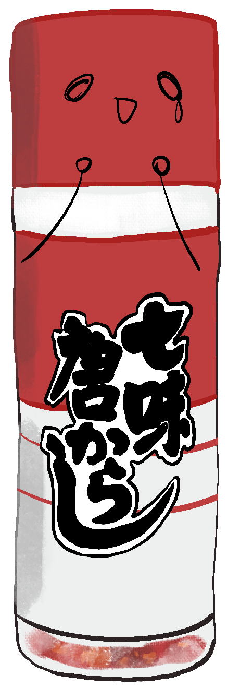
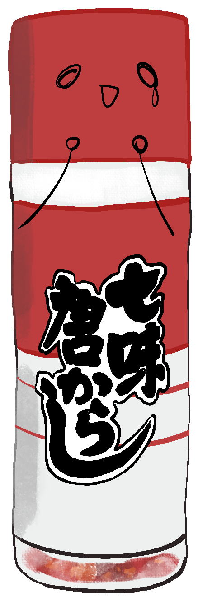
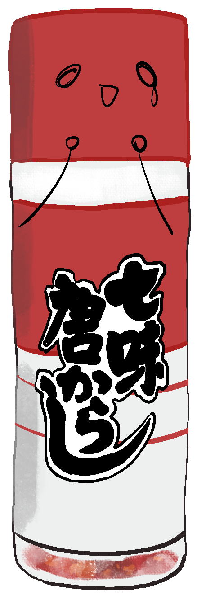

<回上一頁
<回上一頁
產品待辦清單好了之後，我們來召集 Scrum Master 和開發團隊共同召開短衝規劃會議
(Sprint Planning)。
短衝即是一個迭代，具有固定時間限制，我們會在這個會議中，決定要完成哪些工作事項來達到商業需求，列出短衝待辦清單
(Sprint Backlog)，並由開發團隊在接下來的產品開發週期裡執行。
▼

 
▼ 下一頁 ▼

▼ 下一頁 ▼
泥豪！ 你是新來的前端吧！我是這次的 Scrum Master白醋，
我的工作主要是促成開發團隊成員協作、引導團隊進行自省會議，提升團隊成員對Scrum瞭解。
這兩位是炸豬排醬和七味粉，是我們開發團隊的成員唷～
目前我們團隊一次 Sprint 週期是兩週的時間，依照我的觀察，目前團隊可以負擔的點數 (Sprint Point) 大約是20點左右。

▼ 下一頁 ▼